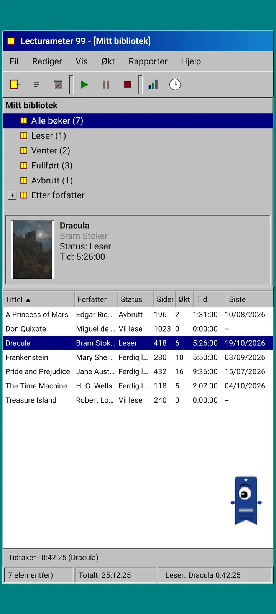
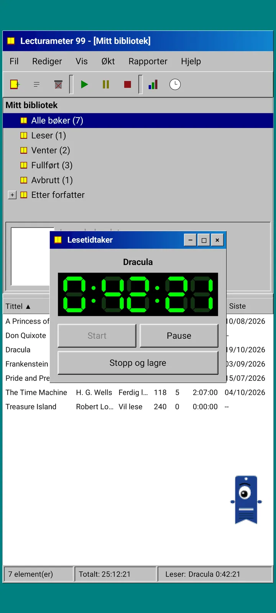
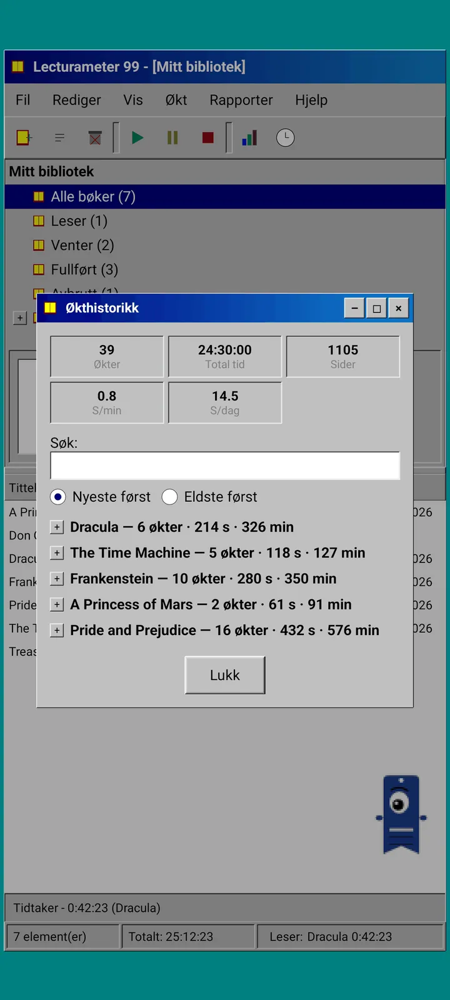
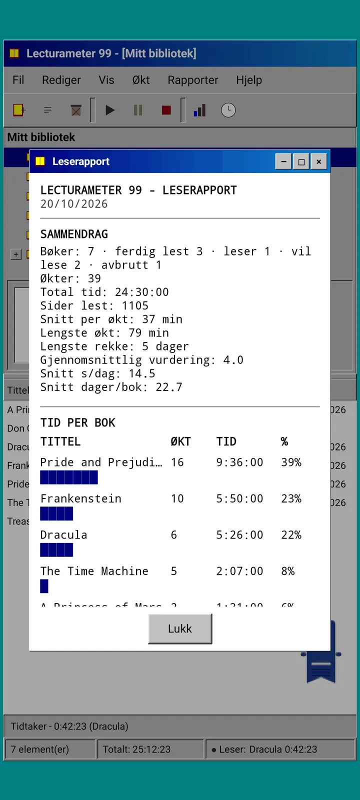

Blogg · 2026-09-24
Lecturameter 1999: hvordan ville Lecturameter sett ut som et gammelt PC-program?
En alternativ Lecturameter-klient med vinduer, menyer, tabeller og en LCD-tidtaker, som åpner dine ekte sikkerhetskopier. Hvordan den ble til, hva den har og hva den med vilje utelater. Kommer gratis til Play Store og App Store.
Lecturameter 1999 har putret i noen måneder. Jeg har bygget det i biter, her og der, uten hast og uten plan. Jeg tok det ikke på alvor før jeg så at iOS-versjonen var enklere enn jeg hadde ventet og ga meg rom til å gjøre det ferdig.
Det er ikke det eneste eksperimentet. Det er andre prosjekter i Lecturameter-universet i tankene, noen ganske langt kommet og andre knapt påbegynt. De fleste av dem vil trolig aldri se dagens lys.
Hvor kommer det fra?
Det hele startet med et eksperiment jeg hadde gått og rundt en stund.
Ideen var å bygge Lecturameter om fra bunnen av, flere ganger, med radikalt forskjellige designforutsetninger. Uten å røre den ekte appen og uten tanke på å erstatte den. Det ble syv versjoner. Én imiterte en Android-app fra 2016, en annen forestilte seg hvordan den ville sett ut i 2036, en tredje gjorde biblioteket om til en bokhylle med rygger som blir tykkere jo mer du leser, og en fjerde var laget for en håndholdt konsoll med to skjermer.
Den jeg likte best var 1999. Et skrivebordsprogram fra slutten av nittitallet: tett, nyttig, alt i vinduer, menyer og tabeller. Jeg bestemte meg for å gjøre det ferdig, bit for bit, som en morsom øvelse og gjøre det til en komplett klient, med de ekte Lecturameter-dataene under.
Hva er det?
Lecturameter 1999 er en frittstående app, adskilt fra Lecturameter. Når du åpner den, ser du ett maksimert vindu over et blågrønt skrivebord. Øverst er tittellinjen og menyene: Fil, Rediger, Vis, Økt, Rapporter og Hjelp. Under den en verktøylinje med pikselerte ikoner. Midtområdet er delt i to: et tre med biblioteket og et forhåndsvisningspanel med omslaget, samt en tabell med én rad per bok. Nederst statuslinjen med antall elementer, total tid og boken du leser.



De samme dataene som Lecturameter
Dette er delen som gjør eksperimentet brukbart. Under 1999-skallet ligger den ekte Lecturameter-datamodellen, kopiert som den er: de samme bøkene, de samme øktene, de samme statusene, poengsummene og notatene. Sikkerhetskopien den eksporterer er den samme filen som Lecturameter eksporterer, og den den også importerer.
I praksis betyr det at du kan gå til Fil, importere sikkerhetskopien din og se hele biblioteket i en 1999-tabell. Lese en uke med LCD-tidtakeren. Eksportere. Gå tilbake til den moderne appen med de nye øktene og uten å ha mistet et eneste felt på veien. Goodreads-CSV-en går også inn og ut.
Boksøket er det samme som i Lecturameter: det spør appens eget katalog og Google Books og fyller ut tittel, forfatter, sider, ISBN og omslag. Omslaget posteriseres og tegnes uten utjevning slik at det ser ut som en GIF fra den tiden.
Økter, historikk og rapport
Leseflyten er Lecturameters, oversatt til vinduer. Du velger en bok i tabellen og trykker på avspillingsknappen. Tidtakervinduet åpnes, med en sjusegmentsskjerm i grønt på svart. Du kan flytte det, minimere det til oppgavelinjen eller lukke det: tiden fortsetter å telle i statuslinjen.
Når du trykker på stopp, åpnes dialogen for å lagre økten: dato, minutter, første og siste side, kommentar. Oppsummeringen regner ut sider og tempo mens du skriver. Hvis du når bokens siste side, spør den om du har lest den ferdig. Manuelle økter legges til fra menyen Økt.
Historikken grupperer øktene per bok i et tre med pluss og minus, med fem tall øverst: økter, total tid, sider, sider per minutt og sider per dag. Trykk to ganger på en økt for å redigere den, trykk lenge for å slette den.
Statistikken er en leserapport i tekst med fast tegnbredde, som om den kom ut av en skriver: en oppsummering med lengste rekke og gjennomsnittlig poengsum, tid per bok med blokkstolper, hastighet i sider per dag, en årskalender tegnet med tegn etter sidene lest hver dag, og de siste sju dagene.



Pagi 99
Pagi reiser også til 1999. Det er den samme énøyde bokmerkesilhuetten, men pikselert, og den streifer fritt rundt på skjermen som datidens kontorassistenter. Du drar den med fingeren, den sier en kort replikk når du trykker på den, og den skifter uttrykk avhengig av hva du gjør: den tenker mens du søker etter en bok, leser mens tidtakeren går og feirer når du lagrer en økt eller fullfører en bok.
Appens tips vises i gule snakkebobler forankret til Pagi, én gang hver. Hvis du vil gå gjennom dem igjen, ligger de under Hjelp, Dagens tips.



Hva som utelates
Lecturameter 1999 er enklere med vilje. Det er et eksperiment, og i utgangspunktet vil det ikke utvikles videre etter lansering. Nye funksjoner fortsetter å komme til Lecturameter.
Mens jeg bygde det, bestemte jeg at alt som ikke påvirket leseflyten, skulle ut. Derfor har ikke Lecturameter 1999 noen Pro. Det du ser, er det du får.
Lecturameter 1999 kommer på alle språk Lecturameter støtter.
Når?
Det kommer til Play Store og App Store, gratis, etter at Lecturameter for iOS og versjon 3.7 er ute. Det er ferdig og kjører på telefonen min. Testing med mitt ekte bibliotek og de siste detaljene gjenstår før det publiseres. Når det er tilgjengelig, kunngjør jeg det her, på X og på Reddit.
I mellomtiden er Lecturameter fortsatt Lecturameter, med sine temaer, utfordringer og bingoer. 1999-utgaven er en annen måte å se på de samme dataene.
Mens du venter, Lecturameter på Android
Les videre: Lecturameter 1999 · Lesetid eller sider · Lesetidtaker